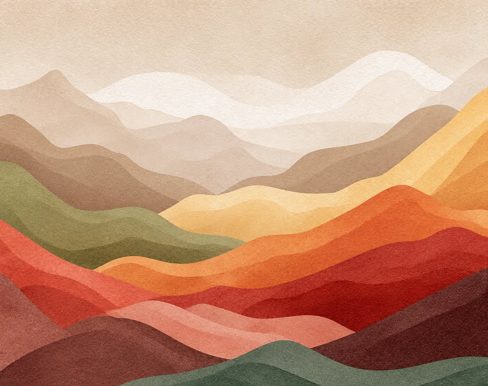
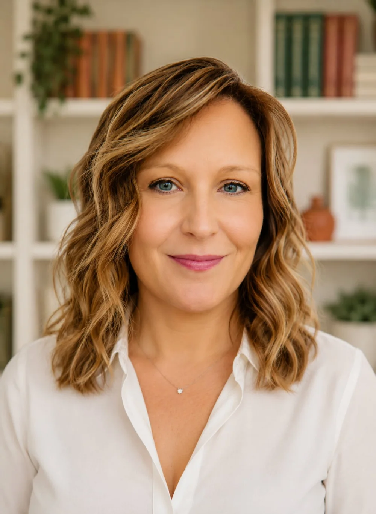

Η πρόθεσή σου να είσαι εδώ είναι μια σπουδαία αρχή για να αφουγκραστείς τον εαυτό σου,
στον ρυθμό που νιώθεις ασφαλής. Μαζί δημιουργούμε τον χώρο για να κατανοήσεις και να
συνδεθείς ξανά με όσα έχουν σημασία για εσένα.
Δευτέρα – Παρασκευή, κατόπιν ραντεβού
Συνεδρίες δια ζώσης και on line, για Ελληνίδες & Έλληνες του εξωτερικού
Συνέχισε
Η αφετηρία
Being Present
Σημαίνει να είσαι σε επαφή με τον εαυτό σου και όσα βιώνεις στο παρόν, χωρίς κριτική.
Να μπορείς να παρατηρείς με επίγνωση όσα αναδύονται μέσα σου, να κατανοείς το παρελθόν σου
και να επεξεργάζεσαι φόβους και άγχη για το μέλλον.
Στη συμβουλευτική, η παρουσία γίνεται μια κοινή διαδικασία. Η εμπειρία σου δεν αποτελεί
αντικείμενο επίκρισης, αλλά ακούγεται με προσοχή και σεβασμό.
Μέσα από τον διάλογο διευρύνουμε τις επιλογές και τις δυνατότητες που πιθανόν έχουν παραληφθεί
και συν-δημιουργούμε τις συνθήκες για να αναδυθεί μια νέα αντίληψη, οπτική και επιλογή.
Θέματα
Πώς μπορώ να βοηθήσω;
Η προσωπική σου ιστορία έχει τη δική της διαδρομή! Μέσα σε αυτή διαμορφώθηκαν οι εσωτερικοί
σου διάλογοι και ο τρόπος που σκέφτεσαι, αισθάνεσαι, σχετίζεσαι και νοηματοδοτείς όσα σου συμβαίνουν.
Μαζί διερευνούμε σκέψεις, συναισθήματα και συμπεριφορικά μοτίβα που κάποτε σε βοήθησαν να
προστατευτείς, αλλά ίσως πλέον δεν σε εξυπηρετούν. Στόχος μας είναι να κατανοήσεις καλύτερα
τον εαυτό σου και να αναπτύξεις πιο λειτουργικούς τρόπους να διαχειρίζεσαι τις προκλήσεις της ζωής.
Άγχος & ένταση
Μεταβάσεις & αλλαγές ζωής
Πένθος & απώλεια
Χρόνια & σπάνια νοσήματα
Σχέσεις & προσωπικά όρια
Γονεϊκός ρόλος
Αυτοεκτίμηση
Επαγγελματική εξουθένωση
Μοναξιά & αίσθηση αποσύνδεσης
Λήψη αποφάσεων & προσωπικά διλήμματα
Υπηρεσίες
Πώς μπορούμε να δουλέψουμε μαζί
Κάθε συνεργασία ξεκινά με μια πρώτη συνάντηση γνωριμίας, όπου συζητάμε τι σε φέρνει στη
συμβουλευτική και αποφασίζουμε μαζί πώς θα συνεχίσουμε.
Πάτησε σε κάθε υπηρεσία για να διαβάσεις περισσότερα.
01Ατομική Συμβουλευτική ΕνηλίκωνΔια ζώσης ή online
Η ατομική συμβουλευτική απευθύνεται σε ενήλικες που επιθυμούν να επεξεργαστούν
συναισθηματικές δυσκολίες, αρνητικές σκέψεις που οδηγούν σε επαναλαμβανόμενα μοτίβα
συμπεριφοράς και επικοινωνίας, που βρίσκονται αντιμέτωποι με διλήμματα, μοναξιά ή
αυξημένες απαιτήσεις.
Η διαδικασία μπορεί να υποστηρίξει την αυτογνωσία, την προσωπική ενδυνάμωση, την
αυτοαποτελεσματικότητα και την ανάπτυξη πιο λειτουργικών τρόπων αντιμετώπισης των
προκλήσεων της καθημερινότητας. Οι συνεδρίες γίνονται εβδομαδιαία, σε σταθερή μέρα και
ώρα, ώστε να υπάρχει συνέχεια και ασφάλεια στη διαδικασία.
Στη ζωή μας υπάρχουν γεγονότα που ανατρέπουν τις ισορροπίες μας και μας καλούν να
προσαρμοστούμε σε μια νέα πραγματικότητα. Μια απώλεια, ένα διαζύγιο, μια σημαντική αλλαγή
ή η παρουσία μιας χρόνιας νόσου μπορεί να επιφέρει φόβο, αβεβαιότητα, θλίψη και την ανάγκη
να επαναπροσδιορίσουμε τον τρόπο με τον οποίο συνεχίζουμε τη ζωή μας.
Η συμβουλευτική προσφέρει έναν ασφαλή χώρο για την επεξεργασία αυτής της εμπειρίας, την
αναγνώριση και έκφραση των συναισθημάτων και την αναζήτηση προσωπικών τρόπων
νοηματοδότησης της νέας συνθήκης.
Η υποστήριξη μπορεί να αφορά όχι μόνο το ίδιο το άτομο, αλλά και τους ανθρώπους που
βρίσκονται δίπλα του. Μέλη της οικογένειας και φροντιστές συχνά καλούνται να διαχειριστούν
νέες ευθύνες, συναισθήματα και ρόλους, ενώ παράλληλα χρειάζεται να φροντίσουν και τις
δικές τους ανάγκες.
Η εφηβεία είναι μια περίοδος σημαντικών αλλαγών, αναζητήσεων και νέων απαιτήσεων τόσο για
τον έφηβο όσο και για την οικογένεια.
Στις συναντήσεις μας, οι έφηβοι ενδυναμώνονται ώστε να αντιμετωπίσουν το άγχος και τις
προκλήσεις της σχολικής ζωής, να διερευνήσουν με μεγαλύτερη σαφήνεια τις εκπαιδευτικές και
επαγγελματικές τους επιλογές και να διαχειριστούν δυσκολίες στην επικοινωνία και στις
σχέσεις τους. Παράλληλα, δημιουργείται ένας ασφαλής χώρος για να γνωρίσουν καλύτερα τον
εαυτό τους και να ενισχύσουν την αυτοεικόνα και την αυτοεκτίμησή τους.
Αντίστοιχα, προσφέρεται στήριξη στους γονείς σε ζητήματα που αφορούν όρια, συγκρούσεις,
επικοινωνία, συναισθηματική σύνδεση και τον γονεϊκό τους ρόλο. Στόχος είναι να δημιουργηθεί
ένας χώρος κατανόησης και επικοινωνίας, όπου μπορούν να αναγνωριστούν οι ανάγκες τόσο του
εφήβου όσο και της οικογένειας και να ενισχυθεί η μεταξύ τους σχέση.
04Ψυχοεκπαιδευτικές & Βιωματικές ΟμάδεςΚλειστές, ολιγομελείς ομάδες
Οι ψυχοεκπαιδευτικές και βιωματικές ομάδες οργανώνονται μέσα σε ένα συγκεκριμένο και
ασφαλές πλαίσιο, με συγκεκριμένη θεματολογία και σαφείς στόχους. Δίνουν στους συμμετέχοντες
τη δυνατότητα να ενημερωθούν, να μοιραστούν εμπειρίες και να εξερευνήσουν πλευρές του
εαυτού τους μέσα από την αλληλεπίδραση με τους άλλους.
Ενδεικτικές θεματικές: Όρια & διεκδικητικότητα · Αυτογνωσία & αυτοφροντίδα ·
Συναισθηματική έκφραση · Γονεϊκότητα · Μεταβάσεις & αλλαγές ζωής · Σχέση με την τροφή
& το σώμα.
Οι ομάδες είναι κλειστές και ολιγομελείς. Διαμορφώνονται ανάλογα με τη θεματολογία και τις
ανάγκες των συμμετεχόντων και μπορούν να πραγματοποιούνται δια ζώσης ή διαδικτυακά. Η έναρξη
κάθε ομάδας πραγματοποιείται εφόσον συμπληρωθεί ο απαραίτητος αριθμός συμμετεχόντων.
05Διαδικτυακή ΣυμβουλευτικήΓια όλη την Ελλάδα & το εξωτερικό
Όλες οι υπηρεσίες προσφέρονται και διαδικτυακά, με τον ίδιο τρόπο εργασίας και το ίδιο
πλαίσιο εμπιστευτικότητας. Είναι μια πραγματική λύση αν οι μετακινήσεις δεν είναι εύκολες
για σένα, ή αν βρίσκεσαι στο εξωτερικό και θέλεις να μιλήσεις στη μητρική σου γλώσσα με
κάποιον που καταλαβαίνει το πλαίσιο από το οποίο έρχεσαι.
Χρειάζεσαι μόνο μια σταθερή σύνδεση και έναν χώρο όπου δεν θα σε διακόψουν. Οι συνεδρίες
κλείνονται λαμβάνοντας υπόψη τη διαφορά ώρας.
Για φοιτητές, ανέργους και ΑμεΑ ισχύει μειωμένο κόστος συνεδρίας, κατόπιν επίδειξης του
αντίστοιχου εγγράφου.

Η φιλοσοφία μου
Η φιλοσοφία μου
Πιστεύω βαθιά στη δύναμη της συμβουλευτικής σχέσης και στην έμφυτη ικανότητά σου για εξέλιξη.
Γι’ αυτό στις συναντήσεις μας επιδιώκω να ακούγεται καθαρά η δική σου αυθεντική φωνή.
Πώς δουλεύω
01
Με αφετηρία εσένα
Οι ανάγκες, οι επιθυμίες και οι προτεραιότητές σου συνδιαμορφώνουν την πορεία της
διαδρομής σου. Δεν αναζητούμε έτοιμες λύσεις ή προκαθορισμένες απαντήσεις. Δημιουργούμε
τον χώρο για να διερευνήσουμε πώς θέλεις να υπάρχεις και να σχετίζεσαι.
02
Στον ρυθμό σου
Η εξέλιξη δεν είναι γραμμική. Μπορεί να παρατηρείς αλλαγή και ανάπτυξη και άλλες φορές
να νιώθεις αμφιβολία και στασιμότητα. Κάθε στάδιο σε βοηθά στην αναζήτησή σου.
03
Με ευελιξία
Αξιοποιώ θεωρητικές αρχές και στοιχεία από διαφορετικές προσεγγίσεις. Η προσέγγιση
προσαρμόζεται στη μοναδικότητά σου, στη συγκεκριμένη συνθήκη που φέρνεις και στον τρόπο
με τον οποίο εσύ επιθυμείς να δουλέψουμε.
04
Με σαφές πλαίσιο
Η εμπιστοσύνη και ασφάλεια στη συμβουλευτική σχέση αποτελεί συνεργατική διαδικασία.
Τα σαφή όρια, η ενημερωμένη συναίνεση, ο σεβασμός στην αυτονομία σου και η εχεμύθεια
αποτελούν βασικές προϋποθέσεις της εργασίας μας.

Σχετικά με μένα
Η δική μου διαδρομή είναι γεμάτη ανθρώπινες ιστορίες.
Η κατανόησή μου για τις ανθρώπινες σχέσεις και τα συστήματα μέσα στα οποία αναπτυσσόμαστε,
διαμορφώθηκε μέσα σε πολύπλευρους εκπαιδευτικούς και επαγγελματικούς κύκλους που είχαν πάντα
στο επίκεντρο τον άνθρωπο.
Έχω εργαστεί στον χώρο των πωλήσεων και του Marketing, στη δευτεροβάθμια εκπαίδευση ως
εκπαιδευτικός και ως σύμβουλος διατροφής. Κάθε χώρος εμπλούτισε την εμπειρία μου στην
ανθρώπινη επικοινωνία, τη λήψη αποφάσεων, τον τρόπο που αντιλαμβανόμαστε και ανταποκρινόμαστε
σε ό,τι μας συμβαίνει. Μ’ έφερε πιο κοντά στην κατανόηση του τρόπου που σχετιζόμαστε με τον
εαυτό μας και το σώμα μας μέσα από διατροφικές επιλογές που κάνουμε. Και μου επέτρεψε να δω με
μεγαλύτερη σαφήνεια την αλληλένδετη σχέση που έχουμε με τα πλαίσια που μεγαλώνουμε και
βρισκόμαστε στη ζωή μας και πώς εν τέλει αυτά επηρεάζουν ζητήματα ανάπτυξης, ταυτότητας,
συναισθηματικής απορρύθμισης, αυτοπεποίθησης και αυτοεικόνας.
Φαινομενικά, οι κόσμοι αυτοί μοιάζουν άσχετοι μεταξύ τους. Αποτελούν, όμως, κομμάτια μιας
προσωπικής αναζήτησης και επιδίωξης. Να κατανοήσω τον άνθρωπο και όσα δίνουν νόημα στην
ύπαρξή του. Μέσα από αυτή την αναζήτηση έφτασα στο σήμερα.
Σήμερα
Εργάζομαι ως Σύμβουλος Ψυχικής Υγείας, ιδιωτικά και ως εξωτερική συνεργάτης σε Κέντρα Ψυχικής
Υγείας. Πιστεύοντας στην ανάγκη για συνεχή εξέλιξη και επιστημονική εγκυρότητα, συμμετέχω σε
διεπιστημονική ομάδα και επενδύω σταθερά στην εποπτεία και την προσωπική θεραπεία. Παράλληλα
συνεχίζω τις σπουδές μου στην Ψυχολογία.
Η βασική μου εκπαίδευση στη συμβουλευτική εμπλουτίστηκε μέσα από τη διαδικασία της
παρατήρησης ομάδων αυτογνωσίας και ενσυνειδητότητας (mindfulness), μέσω της βιωματικής μου
εξάσκησης στον ρόλο της συντονίστριας ομάδων και με ένα ευρύ φάσμα περιστατικών, υπό την
εποπτεία και καθοδήγηση έμπειρων συντονιστών.
Πλέον αναγνωρίζω ότι οι διαφορετικοί σταθμοί της ακαδημαϊκής και επαγγελματικής μου ζωής
έθεσαν τη βάση πάνω στην οποία συναντώ κάθε άνθρωπο στη συμβουλευτική. Με ενδιαφέρον για την
ιστορία του, σεβασμό στη μοναδικότητά του και εμπιστοσύνη στην ικανότητά του να ανακαλύψει
τον δρόμο που του ταιριάζει.
Εκπαίδευση & επαγγελματική κατάρτιση
Σπουδές
Βρίσκομαι σε εξέλιξη σπουδών στο BSc Ψυχολογίας με Ψυχοθεραπεία και Συμβουλευτική στο
University of Central Lancashire (UCLan), σε συνεργασία με το ICPS Κολλέγιο
Ανθρωπιστικών Επιστημών.
Έχω εκπαιδευτεί στο τριετές πρόγραμμα «Συμβουλευτική Ψυχικής Υγείας – Συνθετικό Μοντέλο»
στο Κέντρο Εφαρμοσμένης Ψυχοθεραπείας και Συμβουλευτικής.
Διαθέτω πτυχίο στην Οργάνωση και Διοίκηση Επιχειρήσεων, Οικονομικό Πανεπιστήμιο Αθηνών,
και Δίπλωμα ως Ειδικός Εφαρμογών Διαιτητικής, ΙΕΚ ΣΒΙΕ.
Εξειδικεύσεις & μετεκπαίδευση
«Γνωσιακή Συμβουλευτική και Παρεμβάσεις», Εταιρεία Γνωσιακών Συμπεριφοριστικών Σπουδών
«Συμβουλευτική για τις σπάνιες παθήσεις και τη διαχείριση της απώλειας» (Hope Blooms / ΑΜΚΕ «Καρκινάκι»)
«Συμβουλευτική και Ψυχοθεραπεία: Αφηγηματικές, Διαλογικές και Σχεσιακές προσεγγίσεις στη μετανεωτερικότητα», Εθνικό και Καποδιστριακό Πανεπιστήμιο Αθηνών (ΕΚΠΑ)
«Παιδοψυχολογία και Συμβουλευτική Οικογενειών», Πανεπιστήμιο Αιγαίου
«Ψυχοεκπαίδευση: παρεμβάσεις στο άτομο, την οικογένεια, την ομάδα», Ερευνητικό Πανεπιστημιακό Ινστιτούτο Ψυχικής Υγείας (ΕΠΙΨΥ)
«Ομάδα – Οικογένεια – Ζευγάρι», Ελληνική Εταιρεία Ομαδικής και Οικογενειακής Ψυχοθεραπείας
«Εκπαίδευση του Συμπονετικού Νου», Ελληνικό Κέντρο Θεραπείας Εστιασμένης στη Συμπόνοια
«Η τέχνη της επικοινωνίας στις Προσωπικές και Επαγγελματικές Σχέσεις», Ανοιχτό Λαϊκό Πανεπιστήμιο
«Ομαδική Παρέμβαση Δεξιοτήτων Σύναψης Συντροφικών Σχέσεων, σύμφωνα με το Γνωσιακό Συμπεριφοριστικό Μοντέλο», Εταιρεία Γνωσιακών Συμπεριφοριστικών Σπουδών
«Δουλεύοντας με αυτό που δεν αλλάζει: Η θεραπεία στο χρόνιο νόσημα», Εργαστήριο Διερεύνησης Ανθρωπίνων Σχέσεων
«Ψυχολογία: Το κλειδί για ευεξία και επιτυχία», New York College
Ιδιότητες
Μέλος της Ελληνικής Εταιρείας Συμβουλευτικής
Μέλος του ΔΣ του συλλόγου ΣΥΠΠΑΔΡΕΜΙΑ
Εθελοντισμός & αρθρογραφία
Συντονισμός ομάδας υποστήριξης μελών του συλλόγου ΣΥΠΠΑΔΡΕΜΙΑ
Αρθρογραφία: ΑΜΚΕ Καρκινάκι, Ανέλιξη Blog
Άρθρα
Σκέψεις & κείμενα
Κείμενα για όσα συναντώ στη συμβουλευτική — γραμμένα απλά, για να τα διαβάσεις με την ησυχία σου.
Σύντομα θα βρεις εδώ τα πρώτα κείμενα.
Επικοινωνία
Ας μιλήσουμε
Αν αισθάνεσαι ότι θέλεις να μοιραστείς αυτό που σε απασχολεί ή αν απλώς θέλεις να μάθεις πώς
λειτουργεί η διαδικασία, στείλε μου μήνυμα στο email ή πάρε με τηλέφωνο. Μπορούμε να
κανονίσουμε μια συνάντηση για να δούμε πώς μπορώ να βοηθήσω.
Αν βρίσκεσαι σε επείγουσα κατάσταση, η συμβουλευτική δεν αντικαθιστά την άμεση βοήθεια.
Κάλεσε το 112 ή την 24ωρη Γραμμή Ψυχοκοινωνικής Υποστήριξης
10306. Για σκέψεις αυτοκτονίας λειτουργεί 24 ώρες η Γραμμή
Παρέμβασης 1018 (ΚΛΙΜΑΚΑ).